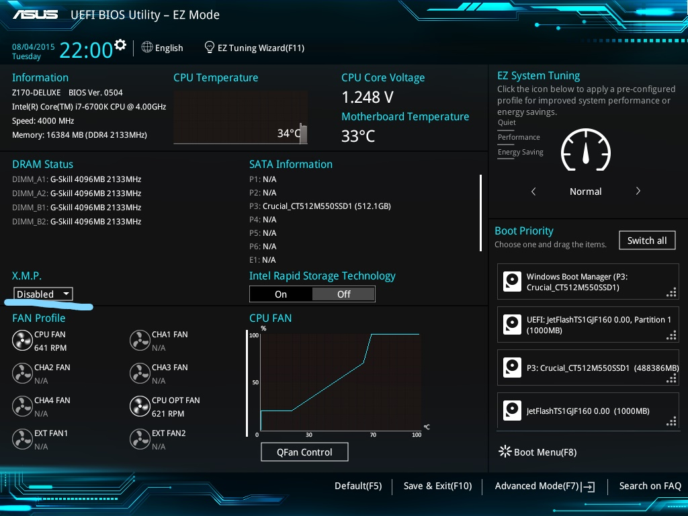
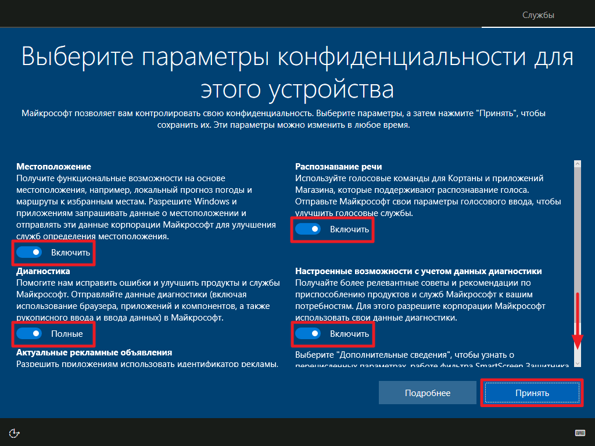
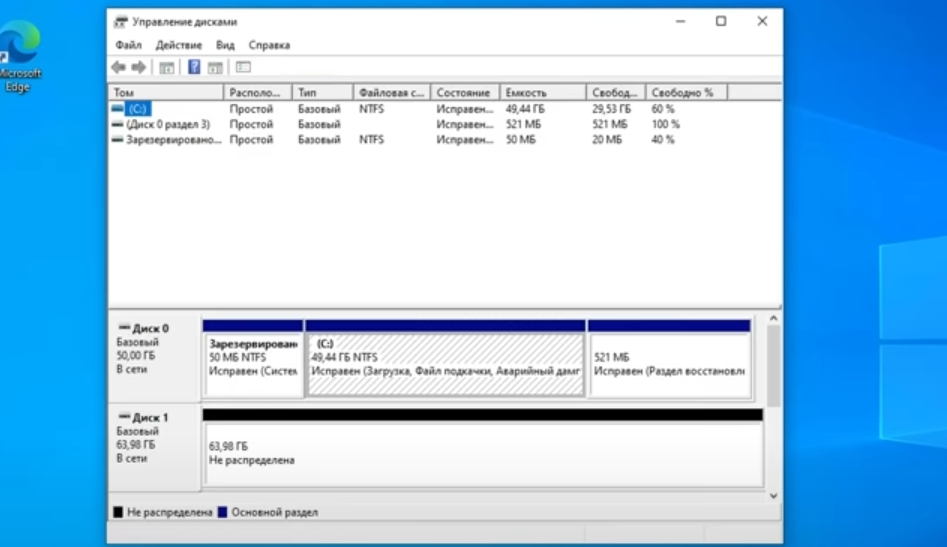

В данной статье вы узнаете, что делать после того, как вы собрали ПК и удостоверились, что в нём всё работает. Вы узнаете, о том, как скачать Windows 10 или 11, как выставить XMP профиль оперативной памяти, как установить драйвера и что делать если комп не видит жёсткий диск или SSD.
Для этого нам необходимо выставить XMP профиль необходимо открыть BIOS. Bios открывается при включении ПК. Как только вы включите компьютер вам надо нажать клавишу Del или F2 и у вас откроется Bios. Там вы увидите надпись X.M.P. , а снизу значение "Disabled". Его нужно поменять на "Enabled".
Для того, чтобы поставить Windows 10 для начала необходима флешка на 8ГБ и более. Для этого в интернете нужно вбить Media Creation Tool и скачать файл на флешку. Далее подключаете флешку в ваш компьютер и включаете её. У вас начнётся установка Windows. В ходе скачивания у вас попросит ключ активации Windows, если его нет переживать не стоит т.к. у вас система будет работать даже без него. В окне "Где вы хотите установить Windows?" вы выбираете диск, на который будет скачиваться сама Windows. Дальше у вас появиться окно параметрами конфиденциальности(см. ниже), в этом окне желательно убрать все галочки и нажать"принять". И всё. Windows 10 установлен.
У большинства пользователей ПК после сборки ПК не видит их жёсткий диск или SSD, и это нормально из-за того, что жёсткий диск или SSD накопитель новый. Если вы столкнулись с этой проблемой вам нужно нажать сочетание клавиш Win + R и в появившимся окне вбить команду "diskmgmt.msc". У вас откроется программа управления дисками(см. ниже).
Вы увидете, что у вас есть свободное, не занятое пространство. Вы нажимаете по нему правой кнопкой мыши и создаёте том. После этого у вас должен отобразиться жёсткий диск.
Если у вас видеокарта от компании Nvidea, то вам нужно скачать утилиту NVIDIA GeForce Experience. Там вам нужно будет зарегистрироваться и скачать последнюю версию драйверов. Если у вас видеокарта от компании AMD, то вам нужно зайти на сайт AMD Radeon и скачать последние драйвера на вашу видеокарту. Дальше вам нужно будет зайти в параметры, пункт обновления и безопасность и обновить все драйвера. После этого вы ищите в интернете официальный сайт производителя вашей материнской платы, вбиваете модель вашей платы и ищете последние драйвера на вашу плату.
Благодаря тому, что вы обновили все драйвера, ваша система начнёт быстрей работать и пропадёт большое кол-во багов.